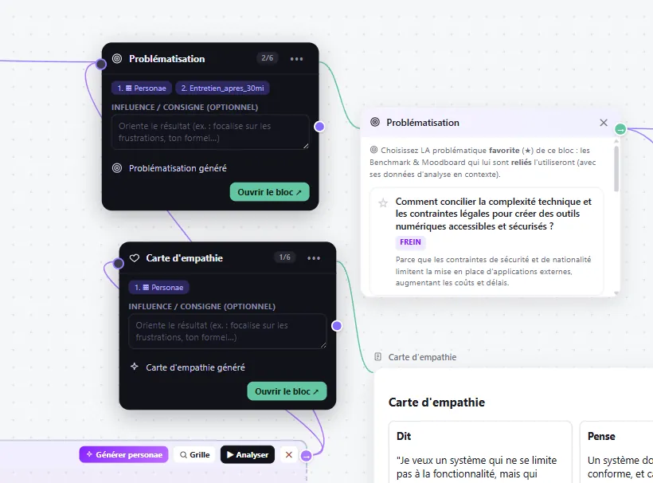
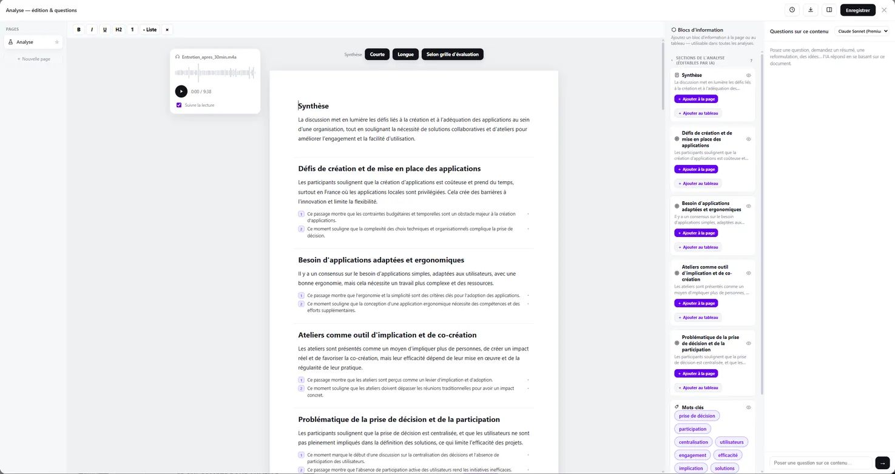

Projet 062026
Un canvas où l’IA est un bloc parmi d’autres, au même niveau que les audios, les recherches et les notes. La structure du projet reste sous les yeux.
DesignFablab
Comment préserver la souveraineté du workflow et des données du designer face à des IA censées faciliter la démarche, mais qui l’opacifient ?
Constat
Le fil de conversation impose son ordre.
On avance au rythme de l’IA, on perd la vue d’ensemble du projet et on finit par ne suivre qu’elle, et les données sensibles et confidentielles se retrouvent en ligne.
Les blocs
Des blocs pensés pour la démarche créative.
Analyse les ressources
Convoqué au besoin, refermé ensuite. Il ne prend jamais tout l’écran.
Souveraineté des informations
Enregistrement transcrit en local, rattaché au point du projet concerné.
Design thinking
Des blocs pensés pour accompagner le designer dans ses démarches créatives.

